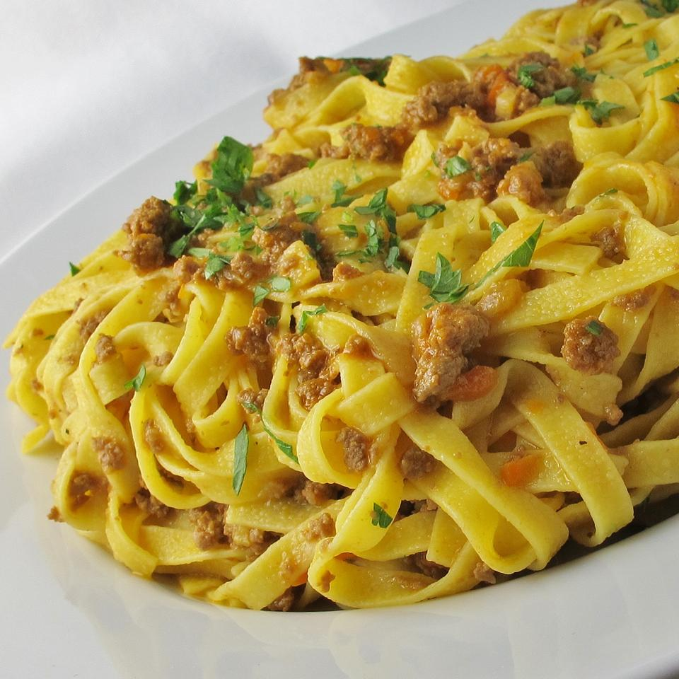

Homepage
Italian Cuisine
North Italian Meat Sauce (Ragu Bolognese)
This recipe comes from Bologna, Italy. One unusual characteristic of this sauce is that there is no garlic in it--but there is a hint of ground nutmeg. Serve over hot cooked pasta.

- Servings:28
- Prep: 25 mins
- Yield:3 1/2 quarts
- Cook:1 hr 5 mins
- Total:1 hr 30 mins
Ingredients
- 4 tablespoons butter, divided
- 4 ounces pancetta, diced
- 1 cup diced onion
- 1 cup chopped carrot
- 1/2 cup chopped celery
- 2 tablespoons olive oil
- 1/4 pound lean ground beef
- 12 ounces lean ground pork
- 1/2 cup white wine
- 2 cups beef stock
- 2 tablespoons tomato paste
- 1/2 pound chicken liver
- 1 cup heavy whipping cream
- 1 pinch ground nutmeg
- 1 teaspoon salt, or to taste
- 1/2 teaspoon freshly ground black pepper, or to taste
Directions
- In a large skillet, melt 2 tablespoons butter over medium heat. Add pancetta, onion, carrot, and celery and cook, stirring often, for 10 minutes or until lightly browned. Transfer to a heavy large saucepan.
- In same skillet, heat olive oil. Cook ground beef and pork over medium heat, stirring to break up any lumps, until browned. Pour in the wine, increase the heat and boil briskly, stirring constantly, until almost all of the liquid has evaporated. Transfer ground meat mixture to the saucepan with the pancetta and vegetables. Set skillet aside.
- Stir the beef stock and tomato paste into the saucepan. Bring sauce to a boil over high heat, then reduce the heat and simmer, partially covered, for 45 minutes, stirring occasionally.
- Meanwhile, melt remaining 2 tablespoons of butter over medium-high heat in the original skillet. Add chicken livers and saute for 3 to 4 minutes, or until firm and lightly browned. Remove livers from skillet and dice. Set aside and add to sauce 10 minutes before it is done. A few minutes before serving, stir in the cream and let it heat through. Season sauce with nutmeg, salt, and pepper to taste.
Nutrition Facts
Calories: 538
- Protein 34.8g;
- Carbs 36.5g;
- Fat 28.6g;
Check also this:
Lasagna